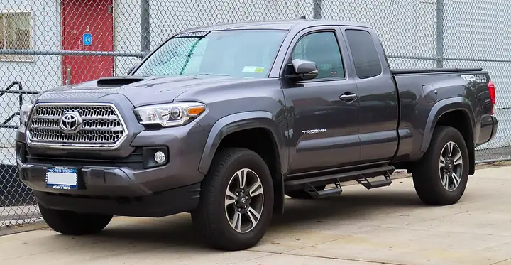
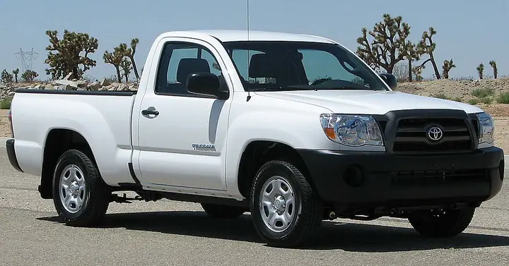
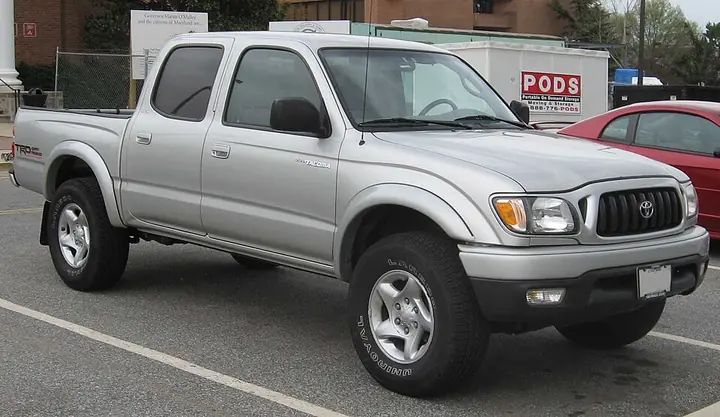

Toyota Tacoma
Fourth generation (N400; 2023) · 2023–present
Abstract
This generation of the Toyota Tacoma was built December 2023 – present in Mexico:, Apaseo el Grande (TMMGT), Tijuana (TMMBC) and other plants. Body styles: 2-door extended cab, 4-door crew cab. Designed by Adam Rabinowitz.

_IMG_9727_(cropped).jpg){kind=link}
1Specifications
| Production | December 2023 – present |
|---|---|
| Model years | 2024–present |
| Assembly | Mexico:Apaseo el Grande (TMMGT)Tijuana (TMMBC)Argentina:Zárate (Toyota Argentina S.A.) |
| Designer | Adam Rabinowitz |
| Body style | 2-door extended cab4-door crew cab |
| Platform | TNGA: GA-F |
| Engine | Gasoline:2.4 L T24A-FTS turbo I4Gasoline hybrid:2.4 L T24A-FTS turbo I4 |
| Transmission | 6-speed manual (RC60F)8-speed automatic (AL80E/F) |
| Battery | 1.87 kWh, 6.5 Ah, 288 V NiMH |
| Charging | V2L: 2.4kW (hybrid), 0.4kW (petrol) |
| Wheelbase | 131.9–145.1 in |
| Length | 213–226.2 in |
| Width | 76.9–79.9 in |
| Height | 73.9–74.6 in |
| Weight | 4145–5410 lb |
| Related | Toyota 4Runner (N500)Toyota Land Cruiser Prado (J250)Lexus GX (J250) |
2Versions
- 2024 X-Runner Concept
- Updates (facelift)
3Previous generations






4Generation by generation
Length +22% from the first to the last
N140 19954,440 mm
N220 20044,836 mm
N240 20155,392 mm
N400 20235,410 mm
Weight +17% from the first to the last
N220 20041,610 kg
N240 20152,007 kg
N400 20231,880 kg